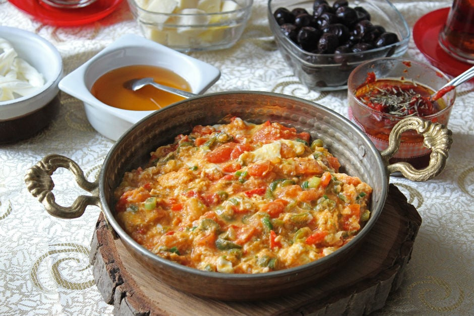

Menemen

Malzemeler
- 2 yemek kaşığı sıvı yağ
- 3 adet yeşil biber (Sap ve çekirdekleri temizledikten sonra, ince doğranmış)
- 3 orta boy domates
- 1/2 (yarım) çay kaşığı tuz
- 3 adet yumurta
- İsteğe bağlı: kaşar peyniri küçük bir kasenin yarısı kadar yeterli olur.
Yapılışı
- Sıvı yağı ve biberleri tavaya alarak biberlerin rengi dönünceye kadar kavurun.
- Üzerine kabukları soyulup küçük küçük doğranmış domatesleri ilave edin.
- Kısık ocakta tavanın kapağını kapatarak domateslerin iyice pişmesini bekleyin.
- Domatesler çok suyu değil, tavaya yapışıyorsa birazcık kaynar su ekleyebilirsiniz. Genellikle de bu duruma gerek kalmayacaktır.
- Domatesler piştikten sonra yumurtaları kırabilirsiniz. Yumurtaları ister ayrı bir kapta çırpıp ekleyin isterseniz de benim gibi tavaya kırıp tavada karıştırabilirsiniz.
- Üzerine tuz ve dilediğiniz baharatları ekleyerek yumurtalar pişene kadar bekleyin.
- Kaşar peyniri eklemek istiyorsanız bu aşamada peynirleri de ilave edebilirsiniz. Menemeni sıcak olarak servis yapın. Çatal sürer iseniz bozuşuruz ;)
Ana sayfa